פשוט להצליח במתמטיקה › כל הנושאים › זהויות, משוואות ופונקציות טריגו
זהויות, משוואות ופונקציות טריגו – סרטוני הסבר ותרגול
43 סרטוני הסבר ותרגול בנושא זהויות, משוואות ופונקציות טריגו – לשאלון 571. כל נושא מוסבר מהקל אל הקשה: קודם הרעיון, אחר כך תרגילים, ובסוף שאלות בסגנון בגרות. הכול בחינם, בשיטת "פשוט להצליח".
רוצים לעקוב אחרי ההתקדמות?נרשמים בחינם, וכל סרטון שראיתם מסומן ✓. ממשיכים מכל מכשיר.
הצטרפות בחינם ←זהויות, משוואות ופונקציות טריגו – שאלון 571 כל הנושאים של שאלון 571 ←
 חקירת פונקציה טריגונומטרית 5 יח – חלק 2: גרף והפונקציה g
חקירת פונקציה טריגונומטרית 5 יח – חלק 2: גרף והפונקציה g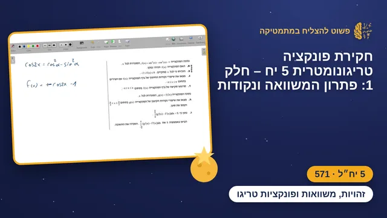
חקירת פונקציה טריגונומטרית 5 יח – חלק 1: פתרון המשוואה ונקודות משוואה טריגונומטרית sin2x=4√3cos³x – הוצאת גורם משותף
משוואה טריגונומטרית sin2x=4√3cos³x – הוצאת גורם משותף פיתרון משוואות עם זהויות 5 יח 1
פיתרון משוואות עם זהויות 5 יח 1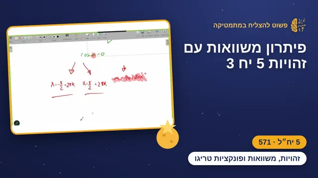
פיתרון משוואות עם זהויות 5 יח 3 מעגל היחידה 5 יח
מעגל היחידה 5 יח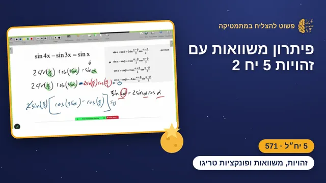
פיתרון משוואות עם זהויות 5 יח 2חקירת טריגו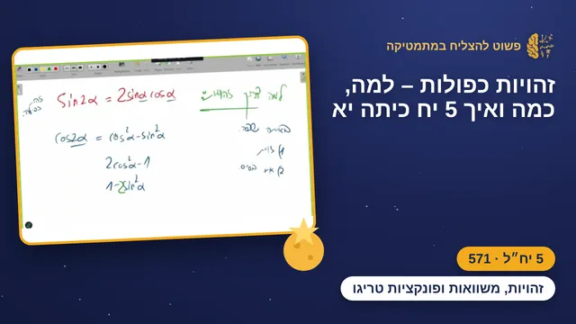
זהויות כפולות – למה, כמה ואיך 5 יח כיתה יא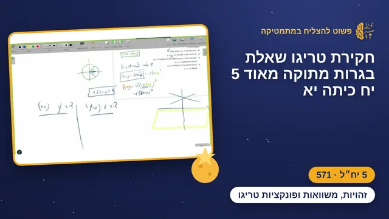
חקירת טריגו שאלת בגרות מתוקה מאוד 5 יח כיתה יא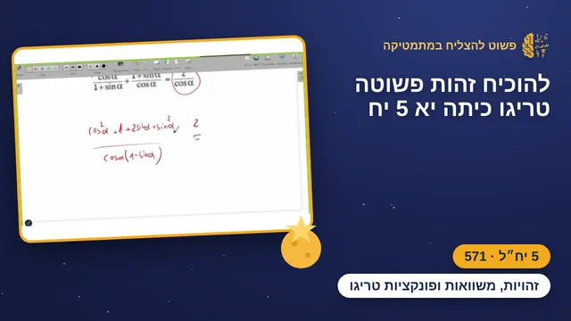
להוכיח זהות פשוטה טריגו כיתה יא 5 יח הוכחות זהויות – חובת צפייה 5 יח כיתה יא 2הוכחות זהויות – חובת צפייה 5 יח כיתה יא 3
הוכחות זהויות – חובת צפייה 5 יח כיתה יא 2הוכחות זהויות – חובת צפייה 5 יח כיתה יא 3 הסבר מעגל היחידה 5 יח כיתה יא
הסבר מעגל היחידה 5 יח כיתה יא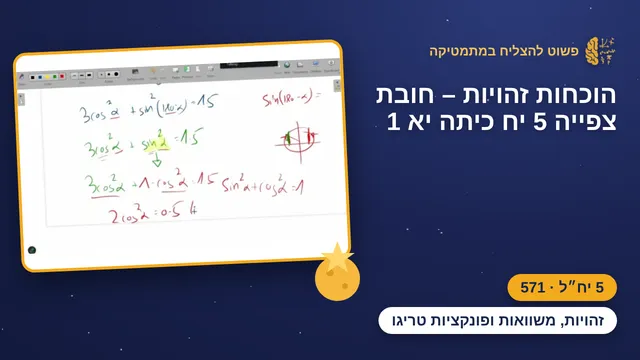
הוכחות זהויות – חובת צפייה 5 יח כיתה יא 1 שאלות קצרות 5 יח שאלון 571 – חקירת טריגו
שאלות קצרות 5 יח שאלון 571 – חקירת טריגו שאלות קצרות 571 – חקירת טריגו 5 יח
שאלות קצרות 571 – חקירת טריגו 5 יח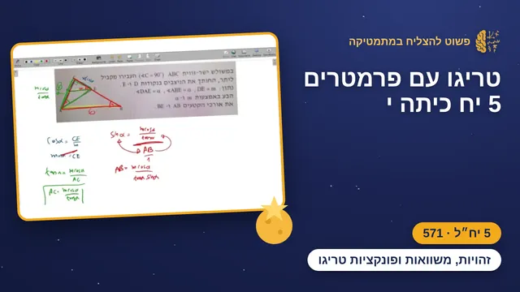
טריגו עם פרמטרים 5 יח כיתה ימשחק והוכחה של זהויות 5 יח 581 1 משחק והוכחה של זהויות 5 יח 581 5
משחק והוכחה של זהויות 5 יח 581 5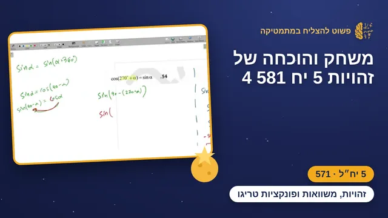
משחק והוכחה של זהויות 5 יח 581 4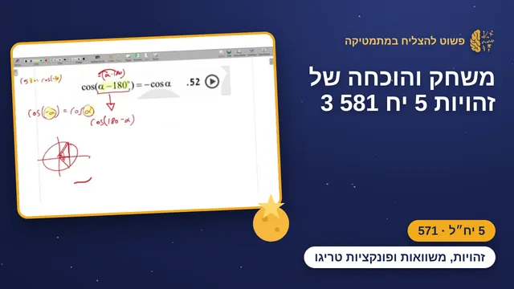
משחק והוכחה של זהויות 5 יח 581 3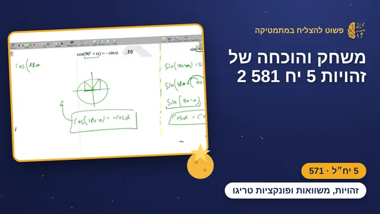
משחק והוכחה של זהויות 5 יח 581 2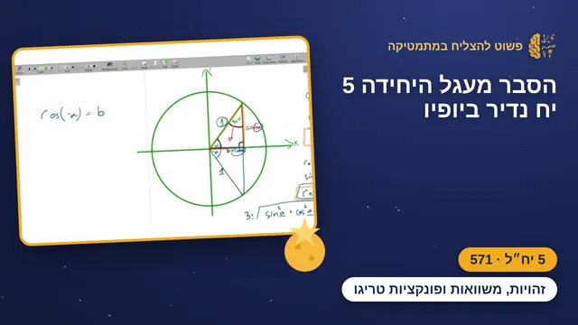
הסבר מעגל היחידה 5 יח נדיר ביופיו נגזרות פונקציות טריגונומטריות 806
נגזרות פונקציות טריגונומטריות 806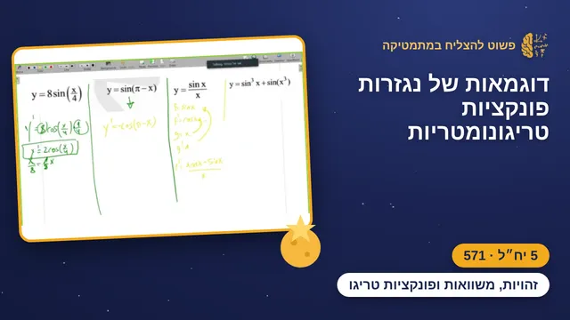
דוגמאות של נגזרות פונקציות טריגונומטריות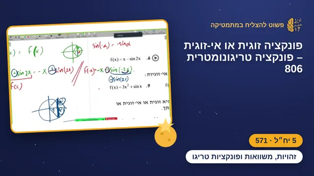
פונקציה זוגית או אי-זוגית – פונקציה טריגונומטרית 806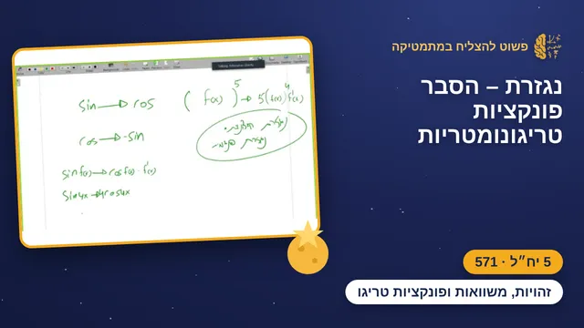
נגזרת – הסבר פונקציות טריגונומטריות משוואות טריגונומטריות 5 יח 806 5
משוואות טריגונומטריות 5 יח 806 5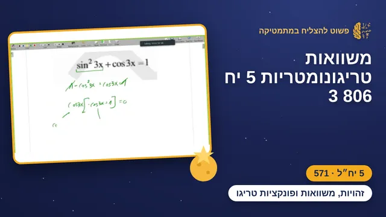
משוואות טריגונומטריות 5 יח 806 3 משוואות טריגונומטריות 5 יח 806 2
משוואות טריגונומטריות 5 יח 806 2 משוואות טריגונומטריות 5 יח 806 1
משוואות טריגונומטריות 5 יח 806 1 מעגל היחידה – הסבר זהויות 5 יח משוואות טריגונומטריות
מעגל היחידה – הסבר זהויות 5 יח משוואות טריגונומטריות משוואות טריגונומטריות ברמה גבוהה 5 יח כיתה י 2משוואות טריגונומטריות ברמה גבוהה 5 יח כיתה י 3משוואות טריגונומטריות ברמה גבוהה 5 יח כיתה י 4זהויות ומשוואות טריגונומטריות – משמעות ומהות, זהויות בסיסיותמשוואות טריגונומטריות – tan: מה זה אומר ואיך פותרים כיתה י 5 יח
משוואות טריגונומטריות ברמה גבוהה 5 יח כיתה י 2משוואות טריגונומטריות ברמה גבוהה 5 יח כיתה י 3משוואות טריגונומטריות ברמה גבוהה 5 יח כיתה י 4זהויות ומשוואות טריגונומטריות – משמעות ומהות, זהויות בסיסיותמשוואות טריגונומטריות – tan: מה זה אומר ואיך פותרים כיתה י 5 יח משוואות טריגונומטריות – cos: מה זה אומר ואיך פותרים כיתה י 5 יח 1
משוואות טריגונומטריות – cos: מה זה אומר ואיך פותרים כיתה י 5 יח 1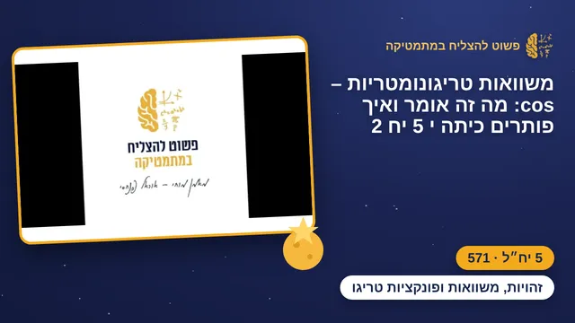
משוואות טריגונומטריות – cos: מה זה אומר ואיך פותרים כיתה י 5 יח 2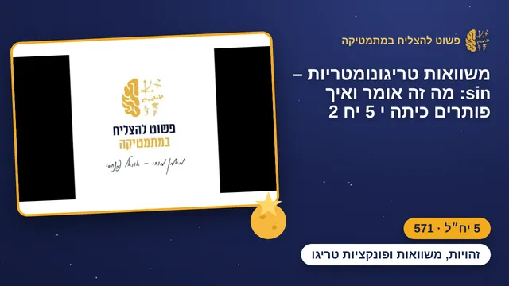
משוואות טריגונומטריות – sin: מה זה אומר ואיך פותרים כיתה י 5 יח 2 משוואות טריגונומטריות – sin: מה זה אומר ואיך פותרים כיתה י 5 יח 1
משוואות טריגונומטריות – sin: מה זה אומר ואיך פותרים כיתה י 5 יח 1 חקירת טריגו שאלה 7 בגרות חורף 2024 806 581
חקירת טריגו שאלה 7 בגרות חורף 2024 806 581